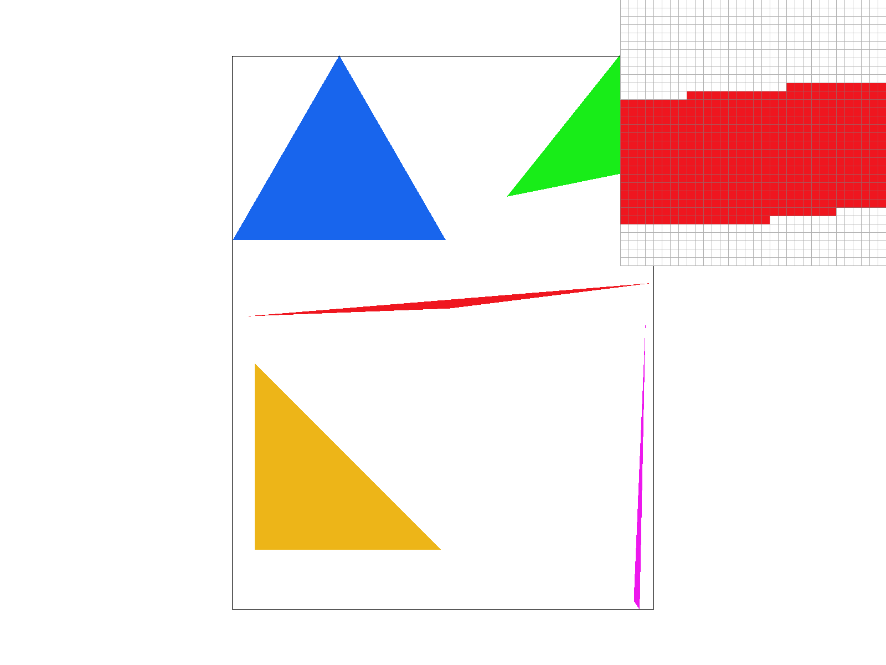
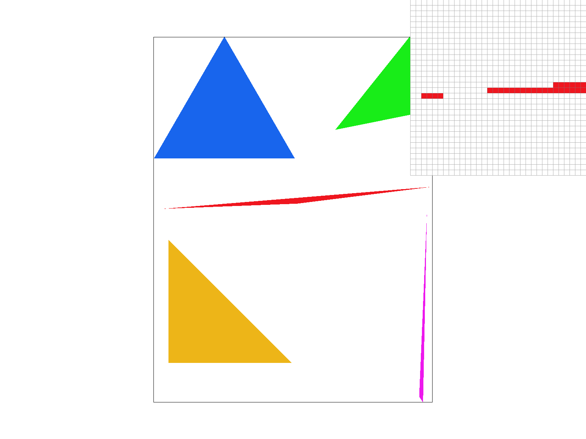
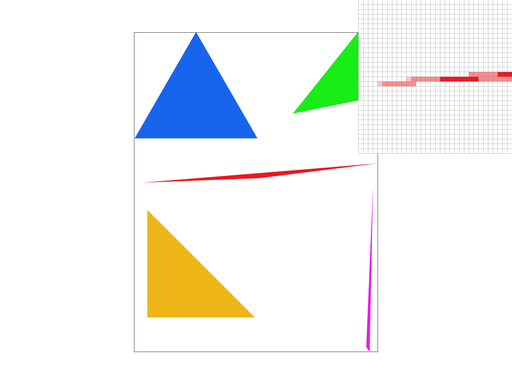
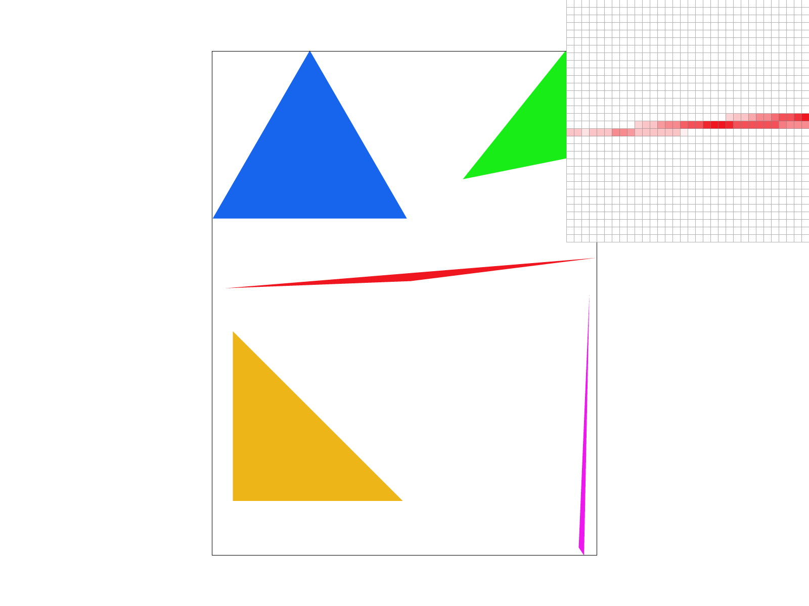

In this homework we built the core of a 2D SVG rasterizer: the stage that turns shapes described in continuous coordinates into a grid of colored pixels. We started from the smallest piece, deciding whether a sample point lies inside a triangle, and built up from there. On top of that test we added supersampling for antialiasing, a hierarchy of 2D transforms, barycentric interpolation of per-vertex colors, and texture mapping with nearest and bilinear pixel sampling and mipmapped level sampling.
Nearly every feature turned out to be the same question asked in a different space. Rasterizing is point sampling of a coverage function. Supersampling takes more of those samples per pixel and averages them. Texture mapping samples a second signal, the texture, at locations given by the barycentric coordinates. Mipmapping is prefiltering that signal so that one sample stands in for the whole footprint of a pixel. The most useful thing we learned was to see aliasing as undersampling in any of these spaces, and each technique here as a different trade between taking more samples and filtering the signal before sampling it.
We did not implement any of the extra credit items.
We rasterize triangles by first settings a max and min bound for what pixels to test to see if they're in the triangle, then using line_test to see if a tested point is inside or outside the triangle using a cross product by seeing if the point is on the same side of all 3 edges of the triangle (since if it's on the same side of all 3 lines, then it's inside the triangle). After that, we assign different colors depending on if the point is inside or outside.
Why it is no worse than the bounding-box algorithm. My algorithm is the bounding-box algorithm. This is because it creates a bounding box, then does the 3 edge test cross products on all points within the box to determine if the point is in the triangle. This means cost is proportional to the area of the bounding box, meaning it is not worse than the bounding box algorithm.

basic/test4.svg with the default viewing parameters (1 sample/pixel). The
pixel inspector is centered on the thin red triangle, whose edges show clear staircase aliasing.The reason we use supersampling for this is because using our rasterizer, a pixel will either be the color of the triangle that it's center is in or no color. However, a percentage of the pixel can be in a triangle without the center being in it, and vice versa. This means we should supersample to see what percentage of a pixel is in each triangle. Since it's hard to compute the exact percentages, our code estimated it instead.
What we did: The first step of our algorithm is have several samples for each pixel, so it can have a range of colors. The data structure we used for this is a resizable array to hold the samples in a way such that each pixels samples are next to each other. This is the main data structure we use, and its size is width * height * sample rate. After that, we take multiple samples within each pixel in an nxn grid pattern and have each sample stored in it's own slot. Once we had the samples, we average them into the actual color of the pixel. Finally, we color in the pixels appropriately.
Pipeline changes. Firstly, we now test each pixel multiple times instead of once depending on the rate we use. As a result, we also store the pixel information in a resizable array instead. We also write more than one color per pixel now and also add a completely new step which averages the colors of all the sub pixels in the pixel to determine the color of the pixel.
|
 |
 |
 |
Results. For rate 1, the single center sample misses the triangle quite often, so it stays white at a high frequency. For rate 4, instead of one chance for the triangle edge to hit the triangle, it has 4 chances, so it begins to look more connected because the triangle gets 1-2/4 samples a good amount, making the pixel look a light shade. For rate 16, the estimation is much better, since you're using a 4x4 grid. This makes the triangle look much smoother, including near the tips so the triangles fade out gradually.